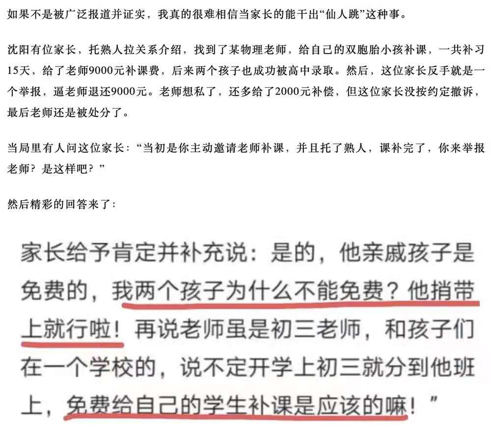
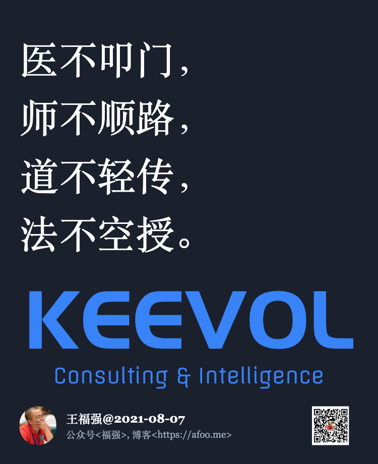

老师、医生与木秀于林
王福强
2021-08-10

这几天有两个人被恶意对待了，一个是沈阳的一个老师，一个是原来上海的一个医生。
有些人就开始替他们奋声疾呼，说他们多么多么好，可是，这些却从来没有意识到一个问题， 一个人很好，就意味着没有别人往TA身上扣屎盆子吗？
你们难道不知道人性里有个东西叫妒忌？ 还是不知道人性里有个东西叫自私？
前几天有位挖财的前同事（现在是某企业CEO）问我收学生或者徒弟有什么要求和标准，说实话，我不太愿意回答这个问题，鉴于较为普遍地尊师重道已经是很久远的事情，倒是可以送大家几句老话，不是我说的，所以，我也不用背负什么。
这几句老话是怎么说的， 叫做“医不叩门，师不顺路，道不轻传，法不空授”，顺便做了个海报，喜欢的可以自取：

太多人被宣贯搞得脑子真得灌太多水了，他们忽略了老师也是人，他们忽略了老师也需要基础资源谋生，他们忽略了即使老师有高尚情操，也没有义务天天围着你转、一心为你好，最主要的，还得免费！
谁都希望别人围绕着你转，问题是，你凭什么？ 就因为你以为你自己最重要？ 最突出？ 最特别？
这个世界其实是不对称的世界，极少数人背负了这不对称的代价，“踢猫效应”大家都知道吧？ 好人一定有好报吗？ 不一定， 或许死都不知道怎么死的。
所以，人生在世，保护好自己，烂人垃圾人能远离快快远离，实在没办法，那就认倒霉呗，有些时候真得是防不胜防。
只要有一颗老鼠屎，所有人都要替TA分担系统性的代价，因为，不防不行啊，但，只要有了防，那就要付出更高的成本。
「为AI疯狂」星球上，扶墙老师正在和朋友们讨论有趣的AI话题，你要不要⼀起来呀？^-^
这里
- 不但有及时新鲜的AI资讯和深度探讨
- 还分享AI工具、产品方法和商业机会
- 更有原价1000多的付费内容(近500分钟)等着你，加入星球(https://t.zsxq.com/0dI3ZA0sL) 即可免费领取!